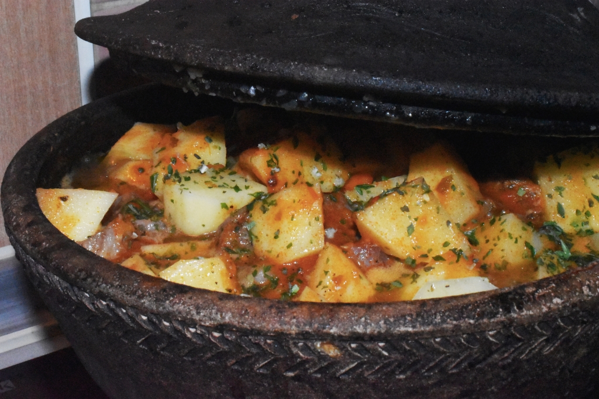

Tagarica

Recipe for main course from Bosnia that is cooked in clay pot.
Ingredients
- 1 kg of beef
- Six medium sized potatoes
- Two tomatoes,two peppers,one carrot,one garlic
Directions
- Cut the beef into small pieces.
- Pour water in the clay pot and add the beef.Let it cook for an hour.
- Cut the vegetables and add to the beef in the pot.
- Peel the garlic and add to the pot.
- Peel the potatoes an cut them longitudinally in four slices.
- After an hour add potatoes and let it cook for an half an hour.